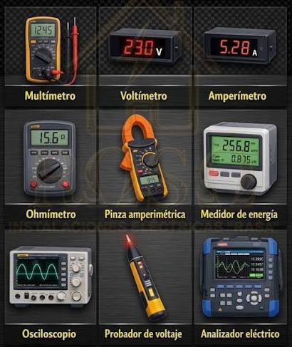

Descripcion
Los instrumentos de medición para tarjetas de desarrollo y sistemas de automatización son herramientas especializadas que permiten comprobar y analizar señales eléctricas, voltajes, corrientes y otras variables necesarias para el funcionamiento de circuitos electrónicos. Facilitan la programación, calibración, diagnóstico y verificación de componentes, sensores y módulos, garantizando mediciones precisas durante el diseño y desarrollo de proyectos tecnológicos

Detalles
Importancia en el desarrollo tecnológico El uso adecuado de estas herramientas permite mejorar la precisión de los proyectos, optimizar el funcionamiento de los circuitos y facilitar la detección de errores durante las pruebas. Además, contribuye al aprendizaje práctico de la electrónica, la instrumentación y los sistemas de automatización. En TechNova, estas herramientas representan una categoría fundamental para quienes buscan desarrollar, experimentar y perfeccionar soluciones electrónicas y tecnológicas.
Instrumentos de medida
- Multimetro digital
- Osciloscopio digital
- Generador de señales
- Medidores de variables fisicas y ambientales